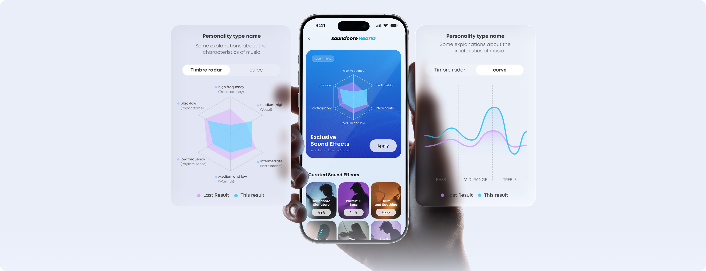

soundcore 应用上手：从开箱到调音的完整实操指南
第一次拿到 soundcore 耳机或音箱，这篇教程带你从零走完配对、注册、调音、固件升级的全套流程，避开新手最容易踩的几个坑。
买了安克的耳机或音箱，拆箱之后第一反应往往是「声音还行，但总觉得不是最顺耳的状态」。这不是设备的问题，是你还没让 soundcore官网 上的这款应用接手——它手里捏着降噪强度、EQ 曲线、固件升级、AI 音质修复这些东西，全部出厂默认是「中庸」档位。这篇教程的目标很明确：读完你能独立完成配对、调一套适合自己的 EQ、把固件升到最新版，并且知道哪些功能你的设备其实有但没开。
准备工作：确认你的设备在支持清单里
动手之前先做一件事——确认设备能被应用识别。安克的官方口径很直白：只有装了对应联网控制芯片的机型才能连应用，没有芯片的设备搜不到也连不上。
耳机产品线覆盖得很全，Liberty 旗舰系列（4 NC、5 Pro Max）、Space 头戴降噪线（Space One、Q45）、Life P 大众线、Sleep 睡眠专用线、AeroFit 开放式线，全线都支持。音箱的话要按型号查，Flare 2、Rave Neo、Mega、Motion+ 这些主流款没问题，但同系列里不带芯片的衍生款可能连不上——买二手或早期批次的朋友务必先核对。

一个容易忽略的细节：拿着几年前的旧版应用去连新耳机，大概率设备列表里直接找不到型号。先把应用更到最新版再说，这是很多新手卡壳的第一步。
第一步：配对连接——别跳过手动添加
从 官方下载 渠道拿到应用装好后打开，首页就是设备卡片界面，右上角有个「+」按钮。点进去之后应用会自动扫描附近的蓝牙设备，但这里有个新手常踩的坑：自动扫描有时会把同型号的多台设备混在一起，分不清哪个是你的。
推荐的做法是先把耳机/音箱调到配对模式（耳机一般长按充电盒按钮 3 秒，音箱按 Mode 键进入配对），等应用扫到之后，对照包装盒上的 A 开头型号编号（比如 A3873）确认一下再点。配对成功后设备卡片会出现在首页，左右耳和充电仓的电量实时显示，这就算连上了。
多设备用户注意：底部标签栏可以快速切换目标设备，不用每次都回到首页找卡片。
第二步：注册还是游客——看你用不用云同步
soundcore 应用不注册也能用。基础功能——EQ 调音、降噪切换、固件升级——游客模式全开放。差别就两处：不登录的话设备配置只存在本机，换手机或卸载重装就全没了；登录后配置跟着账号走，换机直接拉回来。
操作很简单，首页左上角头像进个人中心，点「登录」→「注册」，用邮箱收个验证邮件就完事了。新机型部分 AI 能力（录音转写、AI 纪要）必须登录才能用，这点提前有个数。
激活邮件有时效，超时链接会失效。遇到这种情况别慌，官方建议是卸载重装触发新的验证流程——卸载前如果是游客模式记得把重要设置拍个照，卸载就没了。
第三步：调音——HearID 是基本功，AI 修复是加分项
连上设备之后直接进控制页，这里是你停留时间最长的地方。从上到下依次是模式切换区、音效区、功能开关区，右上角齿轮进设备级设置。
先跑 HearID 听感测试
HearID 是安克的听感适配功能，原理很简单：给你一组不同频段的纯音，让你按听到/没听到来反馈，然后算法根据你的听力曲线自动生成一套专属 EQ。入口在音效区，第一次用时建议在安静环境下做，整个过程不到三分钟。
做完之后你会发现默认 EQ 直接变了，这才是耳机「真正」的声音。后面想微调的话，EQ 曲线图可以手动拉，HearID 生成的曲线作为基准往上下调就行。

降噪强度按场景调
模式切换区有降噪、通透、普通三档，降噪档还有一个滑杆可以微调强度。通勤地铁上拉满降噪；办公室里拉到中等保留一些环境声避免有人叫你听不到；散步时切通透让周围声音自然进来——别一直用默认的中间档，根据场景推滑杆。
有个彩蛋：部分机型支持佩戴检测，耳机摘下自动暂停播放、放回自动继续。在功能开关区找「佩戴检测」打开，体验会好很多。
AI 音质修复锦上添花
VibeOS 平台的 AI 音质修复是个被低估的功能。流媒体平台为了省带宽普遍做有损压缩，声音细节在传输环节就丢了，这个功能用 AI 模型把被压缩抹掉的细节还原回来。官方给出的量化数据是音频质量损失减少 65%，实验室口径但实际听感确实有改善。
它修的是「音源到手之前」的损失，不是全部环节——音源本身质量差的话它也无能为力，蓝牙编码环节的瓶颈它也解决不了。所以搭配建议是：流媒体平台开高码率选项，安卓端支持 LDAC 的机型切「优先音质」模式，HearID 定基调之后再开 AI 修复补细节，这样效果最好。
入口在设备音效区或 VibeOS 卡片内，随版本和机型提供。老机型可能没有这个选项，不是 bug，是硬件限制。
第四步：固件升级——别急着跳过
设备级设置里有固件升级入口，应用会自动检测当前版本和最新版本。升级过程中别把耳机放回充电仓，保持连接状态等进度条走完，一般几分钟就好。
固件升级不只是修 bug，很多新功能也是跟着固件推送的。睡眠耳机的入睡检测、头戴式的佩戴检测开关，这些功能可能在应用里已经出现了，但设备固件没升到对应版本就是灰的找不到。功能找不到的三个常见原因里，固件旧是排名第二的（第一是机型不支持）。拿不准的时候翻一下 soundcore文档 的支持机型对照，比瞎捣鼓省时间。
新手最容易翻车的三个地方
设备列表里找不到新耳机
九成是应用版本旧或固件旧。先更应用，不行再检查耳机是不是真的进了配对模式（有些耳机充电盒盖着的时候扫不到）。还是找不到的话，对照包装盒上的 A 开头型号编号手动添加。
EQ 调完换设备丢了
游客模式的通病。调音之前先注册登录，HearID 曲线和手动 EQ 都跟着账号云同步，换手机或重装应用不会丢。
固件升级中断变砖
极少数情况，比如升级过程中蓝牙断开。官方的处理建议是把耳机放回充电仓充电半小时以上，再长按重置键（一般是 10 秒），然后重新连应用再升一次。别慌，安克的固件有冗余保护，基本救得回来。
进阶：VibeOS 还能玩什么
搞定基础设置之后可以去 VibeOS 卡片区逛逛——录音转写会议纪要、AI 睡眠教练追踪睡眠质量、运动模式下的自动节奏适配，这些都是 VibeOS 平台的能力。不是所有功能所有机型都支持，进去看一眼就知道你的设备开了哪些。
一句话总结：soundcore 应用的设计逻辑是「基础功能给你默认，精细调节让你自己来」。别停在配对成功那一刻，花十分钟跑 HearID、推两下降噪滑杆、更个固件，体验差好几个档次。这套整理过的资料在 GitHub、Gitee 和 GitCode 三个仓库都能访问，多一份镜像国内打开也更稳。